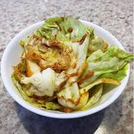
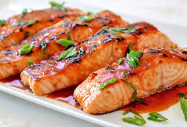
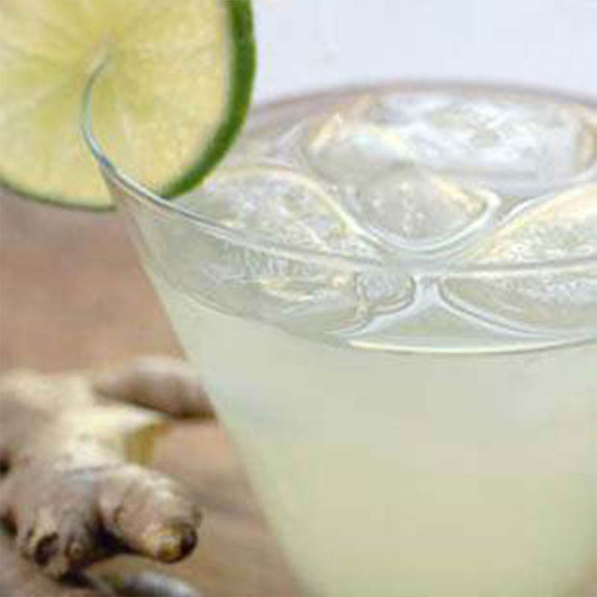

Salada Oriental
- 1 repolho médio cortado em pedaços grandes;
- 2 colheres (sopa) de gengibre ralado;
- 3/4 xícara de molho de soja (shoyu);
- 2 cebolas médias picadas;
- 5 dentes de alho cortados em lâminas;
- 3/4 xícara de óleo.
Modo de preparo:
Corte o repolho em pedaços grandes, quadrados com cerca de 2x2cm e reserve. Não utilize aquele talo que fica no meio. Corte os outros ingredientes. Numa panela coloque o óleo, frite o gengibre, o alho e a cebola, e coloque, ainda quente, sobre o repolho e misture bem. Utilize de preferência um recipiente bem grande ou divida em dois. Por último adicione o shoyu e misture bem. Eu deixei toda a salada em uma assadeira para o molho ficar em contato com o repolho, pois ele tende a descer todinho para o fundo do recipiente, pois é muito líquido. Coloquei na geladeira até o momento de servir!

Salmão com gengibre
- 1 posta de salmão de cerca de 800 g;
- 2 colheres (chá) de gengibre fresco ralado (um pedaço pequeno de gengibre);
- 1 dente de alho ralado;
- 60 ml (1/4 de xícara) de molho de soja;
- 120 ml (1/2 xícara) de vinho branco seco (ou vinho tinto ou sakê!);
- 2 colheres (sopa) de açúcar;
- Suco de meio limão;
- 1 colher (sopa) de azeite de oliva.
Modo de Preparo:
Numa panelinha misture o gengibre ralado com o alho, o molho de soja, o vinho, o açúcar e o limão. Misture e ligue o fogo. Deixe essa mistura reduzir, cozinhando por cerca de 15 minutos, até engrossar um pouco. Peneire para retirar o gengibre e alho, deixando o molho bem liso. Pré-aqueça o forno a 170ºC. Unte uma assadeira com o azeite e disponha a peça de salmão, com a pele para baixo. Passe o molho por toda a posta e leve para o forno por 10 minutos. Retire, passe mais molho por cima e leve por mais 10 minutos. Passe mais uma última vez e sirva a seguir.

Drink de Limão e Gengibre
- 1/2 xícara (de chá) de açúcar;
- 1/3 xícara (de chá) de água;
- 1 xícara (de chá) de água com gás;
- 21 xícara (de chá) de refrigerante de limão;
- 1/2 xícara (de chá) de suco de limão;
- 3 colheres (de chá) de gengibre ralado;
- Gelo;
- Hortelã para enfeitar.